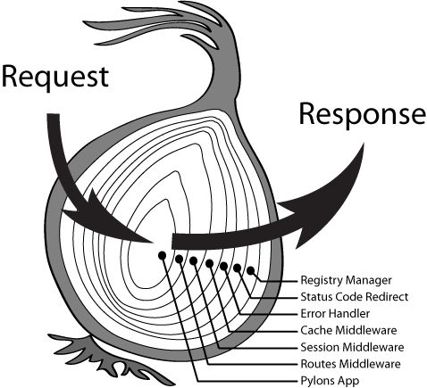

泛IOT全链路知识栈
服务端渲染（Server Rendering）
React中提出了 虚拟DOM 的概念，虚拟DOM以对象树的形式保存在内存中，与真实DOM相映射，通过ReactDOM的Render方法，渲染到页面中，并维护DOM的创建、销毁、更新等过程，以最高的效率，得到相同的DOM结构。
虚拟DOM 给页面带来了前所未有的性能提升，但它的精髓不仅局限于此，还给我们带来了另一个福利： 服务端渲染 。
不同于ReactDOM.render将DOM结构渲染到页面，React中还提供了另外两个方法：ReactDOMServer.renderToString 和 ReactDOMServer.renderToStaticMarkup 。二者将虚拟DOM渲染为一段字符串，代表了一段完整的HTML结构。
同构（Isomorphic）
通过React提供的服务端渲染方法，我们可以在服务器上生成DOM结构，让用户尽早看到页面内容，但是一个能够work的页面不仅仅是DOM结构，还包括了各种事件响应、用户交互。那么意味着，在客户端上，还得执行一段JS代码绑定事件、处理异步交互，在React中，意味着整个页面的组件需要重新渲染一次，反而带来了额外的负担。
因此，在服务端渲染中，有一个十分重要的概念， 同构(Isomorphic) ，在服务端和客户端中，使用完全一致的React组件，这样能够保证两个端中渲染出的DOM结构是完全一致的，而在这种情况下，客户端在渲染过程中，会判断已有的DOM结构是否和即将渲染出的结构相同，若相同，不重新渲染DOM结构，只是进行事件绑定。
在同构应用中，一套代码（不局限于组件），能够同时在客户端和服务端运行，总体结构如下：


Koa2-React-Isomorphic

为什么是Redux
什么是Redux?
你们可以看看官网的解释

看了一脸懵逼。
一句话概括，redux只是一个实现了Flux思想的数据流框架。
既然是一个数据流框架，那么数据是如何流动的？

所谓 Redux，就是将动作(action) 变换成 state 转换函数(reducer)，然后放到一个统一的地方(store)来 setState 而已。
理解的Redux的3个特性：
1、单向性 单向数据流其实并不是redux的特性，而是react本身的思想。
2、唯一性
指的是应用的数据都会集中存储在一个地方，这个数据Store就像一个池子，任何组件都可以通过固定的管道来传输或者获取这个池子里面的数据。
3、时间旅行
这个“时间旅行”另外的意思是可预测（predictable），即容易理解的代码。在redux里，任何一个数据都有状态。一个用户操作或者程序需要去修改数据，都必须触发Action，这时在redux看来，其实数据是从一个状态，变化成另一个状态。这么一来，数据就变得可预测，可以知道数据的前置状态(prev state)和后置状态(next state)分别是什么，如果在这里加上单元测试，也是极其容易的一件事情。
Redux的确限定了开发者如何去编写程序。Redux提供了一个权衡方案。它规定：
用简单的对象和数组来描述应用状态
用简单的对象来描述应用中的状态变化
用纯函数来描述应用中逻辑变化


Koa2 要学习什么

从上面的对比，我们其实就发现了 Koa2 独具魅力的地方，这些魅力一方面跟框架设计理念有关，一方面跟语言特性有关，语言特性，无外乎下面几个：
- 箭头函数
- Promise 规范
- 迭代器生成器函数执行原理
- 异步函数 Async Function
- 以及 Koa2 的应用上下文 ctx 的常用 API（也即它的能力）
- koa-compose 工具函数的递归特征
- 中间件执行的进出顺序和用法